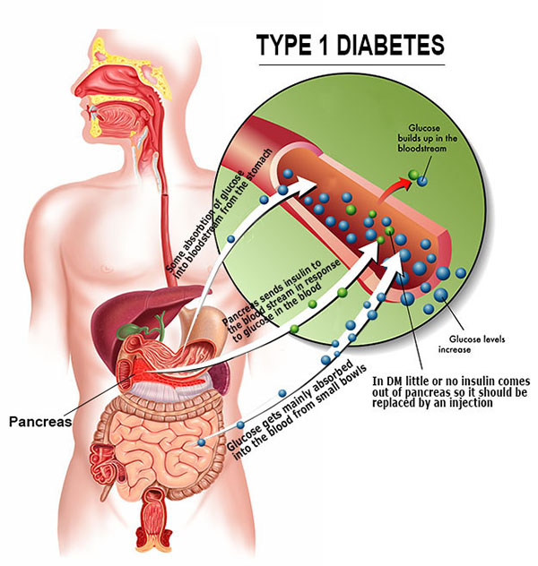

Diabetes Mellitus
Introduction
A group of metabolic diseases characterized by hyperglycemia resulting from defects in insulin secretion, insulin action, or both. Chronic hyperglycemia of diabetes is associated with long-term damage, dysfunction, and failure of various organs, especially the eyes, kidneys, nerves, heart, and blood vessels. Several pathogenic processes are involved in the development of diabetes. These range from autoimmune destruction of the β-cells of the pancreas with consequent insulin deficiency to abnormalities that result in resistance to insulin action. The basis of the abnormalities in carbohydrate, fat, and protein metabolism in diabetes is deficient action of insulin on target tissues. Deficient insulin action results from inadequate insulin secretion and/or diminished tissue responses to insulin at one or more points in the complex pathways of hormone action. Impairment of insulin secretion and defects in insulin action frequently coexist in the same patient, and it is often unclear which abnormality, if either alone, is the primary cause of the hyperglycemia.
Types of Diabetes
Signs and Symptoms of Diabetes Mellitus


Polyuria, Polydipsia, Polyphagia
- Polyuria or increased urination. Polyuria occurs because the kidneys remove excess sugar from the blood, resulting in a higher urine production.
- Polydipsia or increased thirst. Polydipsia is present because the body loses more water as polyuria happens, triggering an increase in the patient’s thirst.
- Polyphagia or increased appetite. Although the patient may consume a lot of food but glucose could not enter the cells because of insulin resistance or lack of insulin production.
- Hyperglycemia
- Weight loss
- Unexplained fatigue or lethargy
- Headaches
- Occasional enuresis in a previously toilet-trained child
- Vaginitis in adolescent girls (caused by Candida, which thrives in hyperglycemic tissues). Fruity odor to breath
- Dehydration
- Blurred vision
- Slow wound healing
- Changes in level of consciousness
- Failure to grow at a normal rate
- Delayed maturation
- Recurrent infections
- Neuropathy
- Cardiovascular disease
- Retinal microvascular disease
- Renal microvascular disease
- Hypoglycemia
- Hyperglycemia
- Diabetic ketoacidosis
- Coma
- Hypokalemia
- Hyperkalemia
- Microvascular changes
- Cardiovascular changes
Risk Factors for Pre-Diabetes and
Type 2 Diabetes
| Factors | Rationale |
|---|---|
| Weight | The more fat tissue you have, the more resistant your cells become to insulin. |
| Inactivity | The less active you are, the greater your risk. Physical activity helps you control your weight, uses up glucose as energy and makes your cells more sensitive to insulin. |
| Family history | Your risk increases if a parent or sibling has type 2 diabetes. |
| Race | Although it's unclear why, people of certain races — including blacks, Hispanics, American Indians and Asian-Americans — are at higher risk |
| Age | Your risk increases as you get older. This may be because you tend to exercise less, lose muscle mass and gain weight as you age. But type 2 diabetes is also increasing dramatically among children, adolescents and younger adults |
| Gestational diabetes | If you developed gestational diabetes when you were pregnant, your risk of developing prediabetes and type 2 diabetes later increases. If you gave birth to a baby weighing more than 9 pounds (4 kilograms), you're also at risk of type 2 diabetes. |
| Polycystic ovary syndrome | For women, having polycystic ovary syndrome — a common condition characterized by irregular menstrual periods, excess hair growth and obesity — increases the risk of diabetes. |
| High blood pressure | Having blood pressure over 140/90 millimeters of mercury (mm Hg) is linked to an increased risk of type 2 diabetes. |
| Abnormal cholesterol and triglyceride levels | If you have low levels of high-density lipoprotein (HDL), or "good," cholesterol, your risk of type 2 diabetes is higher. Triglycerides are another type of fat carried in the blood. People with high levels of triglycerides have an increased risk of type 2 diabetes. Your doctor can let you know what your cholesterol and triglyceride levels are. |
Pathophysiology of Diabetes Mellitus
Pathophysiology or physiopathology is a convergence of pathology with physiology. Pathology is the medical discipline that describes conditions typically observed during a disease state, whereas physiology is the biological discipline that describes processes or mechanisms operating within an organism. Pathology describes the abnormal or undesired condition, whereas pathophysiology seeks to explain the physiological processes or mechanisms whereby such condition develops and progresses.

Concept Map of Diabetes Mellitus
Concept map of Diabetes Mellitus aides to assist as graphic organizer to help organize and represent knowledge about Diabetes Mellitus
Symptom Comparison
| Pre-Diabetes | Type 1 Diabetes | Type 2 Diabetes |
|---|---|---|
| No Symptoms | Increased or extreme thirst | Increased thirst |
| Increased appetite | Increased appetite | |
| Increased fatigue | Fatigue | |
| Increased or frequent urination | Increased urination, especially at night | |
| Unusual weight loss | Weight loss | |
| Blurred vision | Blurred vision | |
| Fruity odor or breath | Sores that do not heal | |
| In some cases, no symptoms | In some cases, no symptoms |
Diagnostic Studies
Nursing Management
| Nursing Intervention | Rationale |
|---|---|
| Rapid-acting insulin analogs: lispro insulin (Humalog), insulin aspart | Have an onset of action within 15 minutes of administration. The duration of action is 2 to 3 hours for Humalog and 3 to 5 hours for aspart. |
| Short-acting insulin: regular | Has an onset of action within 30 minutes of administration; duration of action is 4 to 8 hours. |
| Intermediate-acting insulin: neutral protamine Hagedorn (NPH), insulin zinc suspension (Lente) | Onset of action for the intermediate-acting is one hour after administration; duration of action is 18 to 26 hours. |
| Injection procedures | Absorption of insulin is more consistent when insulin is always injected in the same anatomical site. Absorption if fastest in the abdomen, followed by the arms, thighs, and buttocks. It is recommended by the American Diabetes Association to administer insulin into the subcutaneous tissue of the abdomen. |
| Rotation of injection within one anatomical site | This may prevent from freezing of fats in the body |
| Discuss the importance of balance exercise with food intake. | Exercise balances glucose levels by facilitating uptake of glucose into cells. The patient needs to understand the relationship of exercise, food intake, and blood glucose levels. |
| Teach the patient on measuring capillary blood glucose. | Capillary blood glucose monitoring provides the patient with immediate information about blood glucose. |
SBAR Report to Physician about a critical situation
Blood Sugar Interpretation
| Blood Glucose Range | Diagnosis | What it means |
|---|---|---|
| 100 to 125 mg/dL | Prediabetes (also called Impaired Fasting Glucose) | Blood glucose levels are higher than normal but not high enough to be diagnosed as diabetes. This condition puts you at increased risk for developing type 2 diabetes, heart disease, and stroke. |
| 126 mg/dL or more | Diabetes mellitus (type 2 diabetes) | Type 2 diabetes develops when your body doesn't make enough insulin or develops "insulin resistance" and can't make efficient use of the insulin it makes. It greatly increases your risk of heart disease and stroke. |
| 140 to 199 mg/dL | Prediabetes (also called Impaired Fasting Glucose) | Blood glucose levels are higher than normal but not high enough to be diagnosed as diabetes. This condition puts you at increased risk for developing type 2 diabetes, heart disease, and stroke. |
| 200 mg/dL or higher | Diabetes mellitus (type 2 diabetes) | Type 2 diabetes develops when your body doesn't make enough insulin or develops "insulin resistance" and can't make efficient use of the insulin it makes. It greatly increases your risk of heart disease and stroke. |